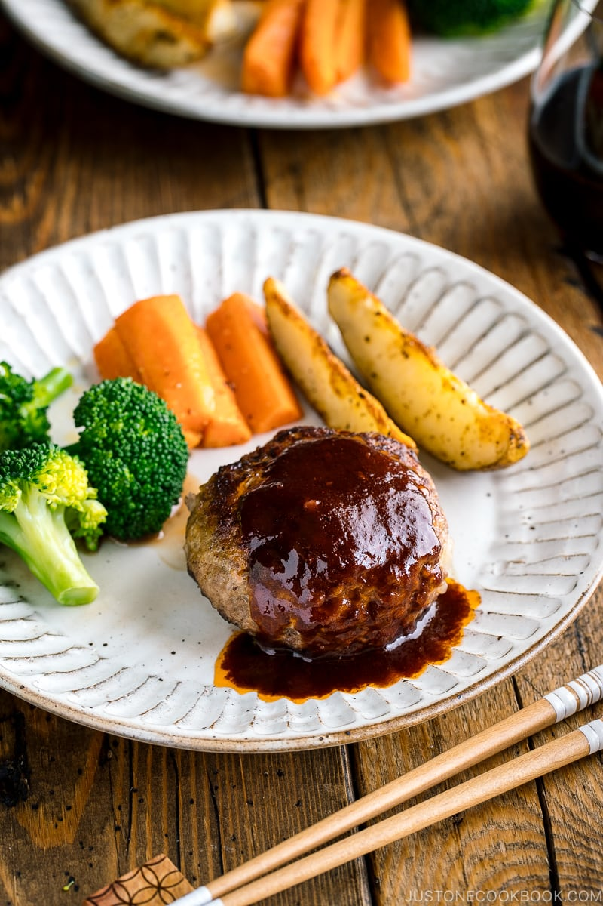

Japanese Hamburger Steak

Served with a red wine reduction sauce, this Japanese Hamburger Steak (Hambagu) is big on flavors.
The meat is juicy and melts in your mouth. It‘s perfect to make in a hot frying pan either in the kitchen or on the
grill!
Japanese Hamburger Steak is a popular dish enjoyed both at home and at Yoshoku (Japanese style western food)
restaurants. It’s a steak made from ground meat and usually served with rice rather than buns.
Ingredients
For the hamburger patties
- 1/2 onion
- 1 tbsp oil
- 3/4 lbs ground beef and pork combination
- 1/2 tsp salt
- freshly ground black pepper
- 1/2 tsp nutmeg
- 1/3 cup panko
- 2 tbsp milk
- 1 large egg
For cooking the hamburger
- 1 tbsp oil
- 3 tbsp red wine
For the sauce
- 1 tbsp unsalted butter
- 3 tbsp ketchup
- 3 tbsp tonkatsu sauce
- 3 tbsp red wine
- 3 tbsp watewr
Instructions
Before you start...
- Please note that this recipe requires 30 minutes of inactive resting time (patties in the refrigerator) in
addition to the total active cooking time.
- Gather all the ingredients. If doubling the recipe, please cook one batch at a time in the pan.
To make the hamburger patties
- Mince ½ onion finely (we call this cutting technique mijingiri in Japanese). Lay the cut onion flat side down on
the cutting board. With the knife tip pointing toward the root end, make ⅛-inch vertical slices to within ½ inch
of the root end. With the knife edge toward the root end, make ⅛-inch horizontal slices, again keeping the root
intact.
- Finally, make perpendicular cuts down through the vertical slices you made. If you need to chop the onions
finer, run your knife through them using a rocking motion. Hold down the tip of the knife; otherwise, the onions
will go flying around the room.
- Heat a large pan over medium heat. When the pan is hot, add 1 Tbsp neutral oil. Then, add the onions.
- Sauté the onions until tender and almost translucent. Transfer to a large bowl and let it cool.
- Once the onions are cool, add ¾ lb ground beef and pork combination to the bowl. Add ½ tsp Diamond Crystal
kosher salt, freshly ground black pepper as you like, and ½ tsp nutmeg. Tip: You can make hambagu with 100% beef,
but it will not be as juicy and tender as combining the two meats.
- Add the ⅓ cup panko (Japanese breadcrumbs), 2 Tbsp milk, and 1 large egg (50 g each w/o shell).
- Start mixing it all together with a silicone spatula or spoon.
- Then, switch to mixing by hand and knead the mixture until it‘s sticky and pale.
- Divide the mixture into 4 portions (4 oz, 113 g each) or 6 smaller portions. Scoop out one portion.
- Toss it from one hand to the other repeatedly about five times in order to release any air inside the mixture
(see the video link above). Tip: Without releasing the air inside, the hamburger steaks will likely crack while
cooking.
- Make an oval-shaped patty and place on a tray or plate. Repeat with the remaining portions. Cover the patties
with plastic wrap and keep them in the refrigerator for at least 30 minutes before cooking so that the meat
combines well and the fat solidifies.
To cook the hamburger
- Heat a large pan over medium heat. (Cook one batch at a time if you‘re doubling the recipe.) When the pan is
hot, add 1 Tbsp neutral oil. Place the patties gently into the pan. Indent the center of each patty with two
fingers because the centers will rise with the heat.
- Cook the patties until browned on the bottom side, about 3 minutes. Then, carefully flip and cook for another 3
minutes until browned.
- Add 3 Tbsp red wine and reduce the heat to low. Cover the pan with a lid and cook for 5–7 minutes to thoroughly
cook the inside of the patties (adjust the cooking time depending on the thickness of the patties).
- Uncover and check that it‘s fully cooked by inserting a skewer; if clear juice comes out, it‘s done. Increase
the heat to medium to let the alcohol finish evaporating. When it’s almost finished, transfer the hamburger steaks
to individual plates. Do not wash the pan as you will make the sauce next using the pan juices.
To make the red wine reduction sauce
- To the same frying pan, add the ingredients for the sauce (for one batch): 1 Tbsp unsalted butter, 3 Tbsp
ketchup, and 3 Tbsp tonkatsu sauce. Tip: Since some ketchup is sweeter than others, adjust the amount to taste.
For the tonkatsu sauce, you can substitute Worcestershire sauce and sugar in a pinch.
- Add 3 Tbsp red wine and 3 Tbsp water to the pan.
- Mix well together and bring the sauce to a simmer over medium heat; let the alcohol evaporate.
- When the sauce thickens (and you can draw a line on the bottom of the frying pan with a spatula), remove from
the heat. Drizzle some sauce over the hamburger steaks.
Home